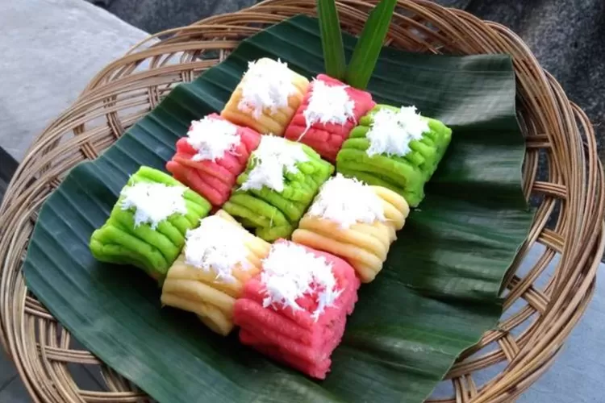
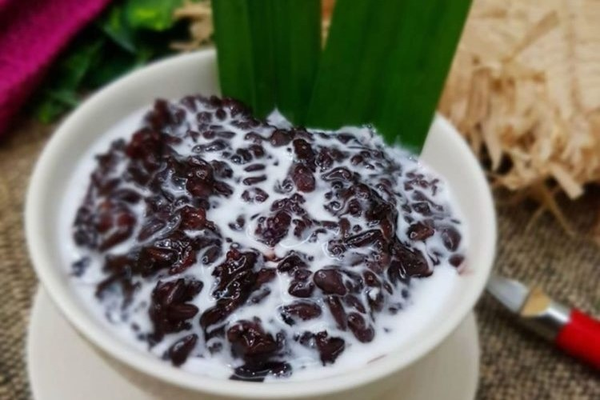

Contoh Menu Jananan Tradisional
Getuk
Makanan tradisional getuk yang hadir di bazar pada kegiatan Sabtu Budaya menjadi salah satu daya tarik kuliner yang menyuguhkan cita rasa khas Indonesia. Getuk, yang terbuat dari singkong yang direbus dan dihaluskan, kemudian diberi pemanis seperti kelapa parut dan gula merah, menawarkan rasa manis yang lembut dengan tekstur kenyal. Makanan ini tidak hanya populer di beberapa daerah di Jawa, tetapi juga memiliki berbagai variasi tergantung pada daerah asalnya. Kehadiran getuk di bazar Sabtu Budaya memberikan kesempatan bagi pengunjung untuk menikmati hidangan tradisional yang kaya rasa dan sejarah, sekaligus melestarikan kuliner lokal yang menjadi bagian dari warisan budaya Indonesia. Dengan tampilnya getuk dalam bazar ini, Sabtu Budaya juga mengajak masyarakat untuk lebih mengenal dan menghargai makanan tradisional yang kaya akan nilai budaya.
Kelepon

Makanan tradisional kelepon yang tersedia di bazar pada kegiatan Sabtu Budaya menawarkan kelezatan khas Indonesia yang sulit dilupakan. Kelepon terbuat dari ketan yang diisi dengan gula merah cair di dalamnya, kemudian dibentuk bulat kecil dan dilapisi dengan kelapa parut. Saat digigit, gula merahnya meleleh dan memberikan sensasi manis yang nikmat, sementara tekstur ketannya yang kenyal dan kelapa parut memberikan rasa gurih yang seimbang. Kelepon adalah camilan tradisional yang populer di berbagai daerah, terutama di Jawa dan Bali, dan menjadi salah satu makanan khas yang menggugah selera. Kehadiran kelepon di bazar Sabtu Budaya tidak hanya menawarkan kelezatan, tetapi juga melestarikan kuliner lokal, memberikan kesempatan kepada pengunjung untuk menikmati rasa autentik yang merupakan bagian dari kekayaan budaya Indonesia.
Bubur Ketan
Makanan tradisional bubur ketan yang hadir di bazar pada kegiatan Sabtu Budaya merupakan hidangan manis yang menggabungkan tekstur ketan yang lembut dengan rasa gurih dan manis yang nikmat. Bubur ketan biasanya terbuat dari ketan hitam atau ketan putih yang dimasak dengan santan, sehingga menghasilkan rasa yang kaya dan creamy. Hidangan ini seringkali disajikan dengan tambahan gula merah cair, kacang, dan kelapa parut, yang semakin memperkaya rasa dan menambah kenikmatan setiap suapan. Kehadiran bubur ketan di bazar Sabtu Budaya menjadi cara yang sempurna untuk mengenalkan kuliner tradisional Indonesia yang sederhana namun penuh rasa. Melalui sajian ini, pengunjung dapat merasakan kekayaan rasa yang menggugah selera dan sekaligus belajar untuk menghargai warisan kuliner lokal yang telah ada sejak lama.